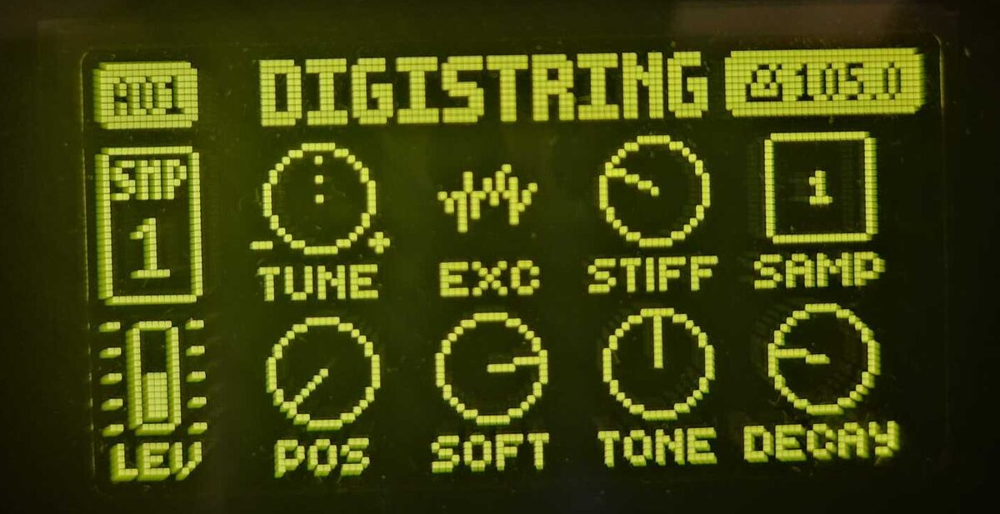

Listen
Four tracks, all STRING.
On the Digitakt

Controls
STRING borrows SLICE's eight parameter slots, so every control is saved with the sound, can be p-locked and reached by MIDI CC.
EXC is drawn as one of four icons instead of a knob.
| Knob | Control | What it does |
|---|---|---|
| A | TUNE | Pitch. An untransposed note plays C4. |
| B | EXC | Exciter: bow, mallet hit, noise burst or pluck |
| C | STIFF | From an ideal string to a bell-like, inharmonic tone |
| E | POS | Pluck position, from the bridge to the middle |
| F | SOFT | Darker, softer attack |
| G | TONE | Damping inside the string: warm to open and metallic |
| H | DECAY | How long the string rings: 0.07 s to about 17 s, endless at the top |
Under the hood
- Karplus-Strong at 48 kHz in fixed point, in tune to within a cent from G1 up.
- DECAY is a time. The same setting rings as long on a low note as on a high one.
- TONE follows the note, so a setting sounds alike from bass to treble.
- No octave jumps on low notes: below F#0 the string slows down instead, down to about 1.5 Hz.
- Decay, tone and the low-note design follow the String model of Mutable Instruments Rings.
- Works alongside Sophie, or on its own.
Install
No compiler needed. You need elekloader, your own stock Digitakt Mk1 OS 1.53 file and the STRING mod.
- Download
digistring-0.7.0.elemodfrom the release. - In elekloader, select your stock OS with Change stock firmware.
- Install from file, enable STRING (and core 2.1), then Build Firmware.
- Send the generated
.syxto the Digitakt with Elektron Transfer.
STRING-fast
For more tracks: the same machine, whose sample loop runs from the Digitakt's fast on-chip memory while digihealth's FAST AUDIO is on. On one Digitakt, five STRING tracks played cleanly at about 95% DSP load with FAST AUDIO on, and went over 100% with it off.
Install digistring-fast-0.7.0.elemod instead of STRING (not both) and
enable digihealth, from
Sophie's repository
(switch on SETTINGS > FAST AUDIO) or from
irpina/digihealth
(FAST AUDIO switches itself on).
Use at your own risk. This modifies your instrument's firmware. Back up your projects and sounds, and keep a stock OS file for recovery.